Fast on one CPU core
- SSE2, AVX2 and NEON kernels with a plain C fallback, picked once at run time. Sources in
core/src.
Reading a tile runs the decoder of every codec in its graph, so the decoders set the read speed. This first part is about how we made those decoders fast on a single CPU core, roughly in the order we learned it, from the first predictor kernels in July 2026 to the PFOR and fused codecs that most recipes end in today.
The short version is that a core can work on eight or sixteen values per instruction, and nearly every speedup we found came from shaping a decoder so those values stop waiting on each other. The longer version has a wheel that quietly lost its fast path, a predictor that will not be parallel, and a block layout chosen for SIMD that the GPU kernel later read the same way.
One instruction, many values
A CPU core can process several numbers with one instruction. A vector register has lanes that add, shift or compare values together. This is called SIMD, single instruction, multiple data. ARM chips, including Apple chips, use NEON with 128-bit registers. x86 uses SSE2, 128 bits on every 64-bit chip, and AVX2, 256 bits on most recent chips.

GeoZL carries kernels for NEON, SSE2 and AVX2. At run time it chooses the widest kernel the machine supports, once, and builds without SIMD use plain C. All paths write the same bytes, so a frame decodes identically on every machine.
That last property is exactly what we wanted. In July it was also what hid a bug from us.
The wheel that lost AVX2
On 26 July 2026 we found that the x86 wheel we had published was running without AVX2. Nothing had failed. A wheel is built for the base x86-64 instruction set, so -mavx2 is not available as a build flag, and the AVX2 kernels simply did not exist in it. The SSE2 kernels took over, wrote the same bytes, and every test passed.
The fix was to stop depending on build flags. Each AVX2 kernel now carries a target attribute, so it sits in the same object file as its SSE2 sibling, and the decoder asks the CPU once at run time which one to use. We measured it against a build with -mavx2 everywhere and saw no difference.
The lesson we took from it is that a lost fast path is invisible from the outside, because the frames come out the same either way. So the same day we added geozl.simd_info(), which reports what a build carries, what the CPU supports and what actually runs. On the M5 we benchmark on, it says this.
>>> geozl.simd_info()
{'built': ['scalar', 'neon'], 'cpu': ['scalar', 'neon'], 'active': 'neon'}A path listed under cpu but missing from built means a build is leaving speed behind. The release jobs fail a wheel when that happens on the runner. CI already ran the tests once per SIMD path, and since 3 November it also checks that each run used the path it was meant to, because the tests alone pass on any of them. Set GEOZL_SIMD before import to cap the active path if you want to compare them yourself.
What a decoder needs to use it
SIMD only helps when the lanes can work without talking to each other. It needs the same operation on neighbouring values, adjacent memory and no branch per value. A row dependency makes value i wait for i − 1. A CPU can live with one such dependency, because it can pass one value between registers while it walks a row.
A GPU has different needs, since no thread can wait for a carry from another, so a codec can suit SIMD but not a GPU, or the reverse. What a GPU wants, the second part, is about that difference. The table below sums it up.

| SIMD on a CPU core | a GPU | |
| planar | a row at a time, by prefix sum | a sum down the columns, then along the rows |
| med, average | a chain through W, one sample after another | stays on the CPU |
| PFOR | shift, and, or on every lane | each thread jumps to slot × b |
| Huffman | one code after another | replaced by PivCo bitmaps |
Planar, a row at a time
Planar predicts every sample as W + N − NW. Decoding x = W + N − NW + r looks serial, because each pixel needs W. Move W to the other side and it becomes x[i] − x[i−1] = r[i] + N[i] − N[i−1]. The right side uses only the residual and the row above, which is already decoded. Compute it across the row with vector math, then take a prefix sum to reconstruct the row.

This rearrangement is where our first optimized decoders started, on 4 July 2026, as a prefix sum fused into the planar decoder so the row above is folded in during the same pass.
The other linear predictors are variations on it. delta_w is the same prefix sum without the row above. delta_n needs no prefix sum at all, since a row is the row above plus its residuals, one SIMD add per register, which makes it the fastest predictor to decode. wp_static reads only finished rows, so it closes the row the same way as planar.
A prefix sum inside a register
A prefix sum looks serial because each lane needs the previous one. Inside a register it is parallel. We shift the register by one lane and add, then by two, then by four. After three steps every lane holds the sum of all the lanes up to it. The figure uses eight 16-bit samples in one 128-bit register.

The only thing that crosses from one register to the next is the carry, the running total so far. The shifts and adds inside a register do not need it, so the CPU can start them early, and only the final carry add waits, once per register of 8 or 16 lanes. Wider registers mean fewer carries per row, at the cost of one more shift and add step inside each.
This is the 16-bit NEON version from core/src/common/vprefix.h, with comments added. The first function is the ladder in the figure, the second adds the carry.
static inline uint16x8_t geozl_vprefix16_neon(uint16x8_t x) {
const uint16x8_t zero = vdupq_n_u16(0);
x = vaddq_u16(x, vextq_u16(zero, x, 7)); // shift by one lane and add
x = vaddq_u16(x, vextq_u16(zero, x, 6)); // by two
x = vaddq_u16(x, vextq_u16(zero, x, 4)); // by four
return x;
}
static inline uint16x8_t geozl_vscan16_neon(uint16x8_t x, uint16x8_t *carry) {
const uint16x8_t p = geozl_vprefix16_neon(x);
const uint16x8_t out = vaddq_u16(p, *carry);
*carry = vaddq_u16(*carry, geozl_vlast16_neon(p)); // old carry + this sum
return out;
}The line that updates the carry is a change from 1 September 2026. Before it, the next carry was the last lane of the finished output, so pulling that lane out sat on the chain between one register and the next. Now the carry grows by the last lane of the register's own prefix sum, which is ready before the old carry arrives, and the chain from register to register is a single add.
When the guess needs W
Planar uses a sum, so W cancels when rearranged. med takes a median of W, N and the planar guess, and average takes the mean of W and N. Neither cancels. Each sample needs its reconstructed left neighbour, which no prefix sum can supply.
The honest result for these two is that we made them less slow, not fast. The 4 July kernels peeled the first row and the first column out of the loop, so the interior loop carries no boundary test. average then got a trick of its own. Its N half is known before the row starts, so it moves into a vectorized pass ahead of the row and leaves a minimal chain through W.
med got the bigger change on 20 September 2026. It now keeps four rows in flight, each one column behind the row above. Each row is still serial, but four independent chains keep the core busy. The median itself is computed with masks instead of branches, because a three-way choice is exactly the branch a CPU guesses wrong.

That staggered wavefront is the best we found for med on a CPU, and on a GPU the chain does not go at all. med still decodes more slowly than planar, so start with planar when decode speed matters.
PFOR in 16-byte lanes
PFOR arrived on 17 August 2026, in 0.14.0, as a lossless codec, and replaced the older store_lo terminal in our recipes. Bit packing has a lane problem of its own, though. Written as one long bit string, value i starts at bit i × b, which with b = 3 lands at arbitrary places inside bytes. Every value needs its own shift, and SIMD lanes need shuffling before they can unpack anything.

GeoZL PFOR follows TurboPFor and stores the body of a block vertically, in 16-byte groups split into lanes. With W-byte elements a group holds L = 16 / W lanes, sixteen for one-byte values and eight for two-byte values. Value i goes to lane i mod L, at slot i div L inside that lane, and every lane is its own little bit stream of b-bit values. A 256-value block fills exactly 2 × b groups whatever the element width.
Take two-byte elements and the eight values from How PFOR works, 3 5 2 7 4 6 1 90 at b = 3. Each one goes to a different lane at slot 0, and the next eight values, shown as x8 onward, go to slot 1 of the same lanes. One 16-byte load brings in two bytes of every lane, enough for slots 0 to 4. The animation then picks out slot 0 at bits 0 to 2 and slot 1 at bits 3 to 5 across all eight lanes.

Every lane uses the same shift and mask, and no value needs bits from a neighbouring lane, so one register unpacks eight or sixteen values at a time. The exceptions are patched afterwards with the same OR on the few slots that need it. The SIMD unpackers landed on 1 September 2026, chosen by value width and packed bit width, with scalar fast paths beside them.
A 16-byte group matches the 128-bit registers of NEON and SSE2, but the size is fixed by the format rather than by the machine. Frames look the same everywhere, so a file written on one CPU decodes just as fast on NEON, SSE2 or AVX2, and still decodes with plain C. The same layout later let a GPU thread read its eight values with one load, which part three comes back to. How PFOR works covers the rest of the block format.
Fewer trips through memory
Fast kernels expose a cost that slow ones hide, the memory traffic between them. Run a 2 MiB uint16 tile through planar, zigzag and pfor as three separate nodes and it moves about 10 MiB through memory, because each stage writes its whole output before the next one reads it. Fused into one codec it moves about 2 MiB plus the frame, since each sample stays in registers between the stages.
The fused planar Zigzag codecs arrived on 1 September 2026 together with the SIMD unpackers. They are why a recipe can say planar>zigzag>pfor and run planar_zigzag_pfor, which reconstructs one PFOR block at a time instead of allocating transformed copies of the whole input. med_zigzag followed on 20 September. Fused follows one tile through both versions.
Where it adds up
Here is where the CPU decoders stand today, pooled over the Earth Compress lossless corpus of 27 corpora and 585 samples. Everything ran on one thread of an Apple M5 under macOS 26.4, GeoZL at 0.31.0. The speeds are one machine's numbers, and we would trust the ratios to travel further than the speeds.
| ratio | decode | |
id>pfor | 1.18 | 10.0 GB/s |
planar>zigzag>pfor | 1.88 | 5.3 GB/s |
planar>zigzag>lanes | 2.04 | 3.4 GB/s |
planar>zigzag>transpose>entropy | 2.13 | 0.91 GB/s |
med>zigzag>transpose>entropy | 2.11 | 0.71 GB/s |
| zstd, level 3 | 1.47 | 1.1 GB/s |
| Blosc, zstd 3 with bitshuffle | 1.64 | 0.94 GB/s |
| pco | 2.13 | 0.94 GB/s |
| JPEG 2000 | 2.31 | 0.03 GB/s |
Lossless results of the Earth Compress benchmark. The lanes recipe ran under its earlier name, planar>zigzag>transpose>pivco, which writes the same frames. JPEG 2000 is pooled over the 445 samples it supports.
The shape of the trade is the thing to take away. Entropy coding buys the last few percent of ratio and costs most of the speed. PFOR is the opposite, and the lanes recipe sits between them. In our corpus, planar>zigzag>pfor decodes about six times faster than the planar entropy recipe for about 12% less ratio.
From a register to a GPU
Then came the reason for the rest of this series. Rumi, the raster format we build on GeoZL, feeds training batches to models, and a model wants a tensor in GPU memory, not a raster in host memory. Could the frames decode on the GPU itself?
Some of what we built for SIMD carries over and some does not. Planar, PFOR and the PivCo lanes also decode on a GPU. med, average and plain Huffman do not. What a GPU wants explains why, and Bytes to tensors follows a batch through the GPU decoder.